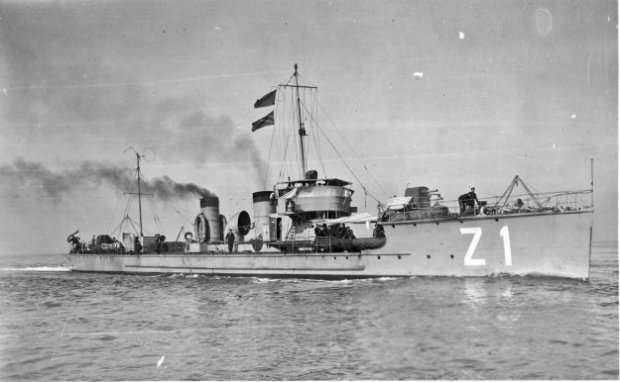
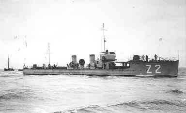
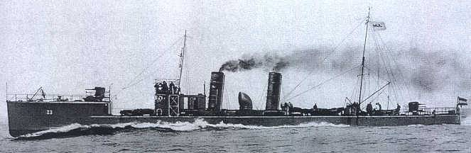
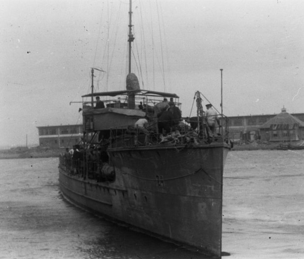
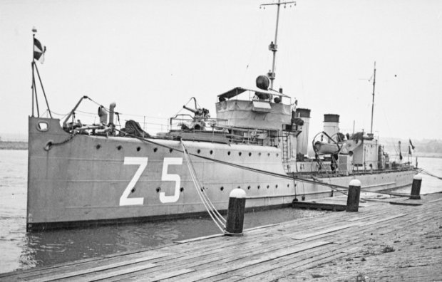
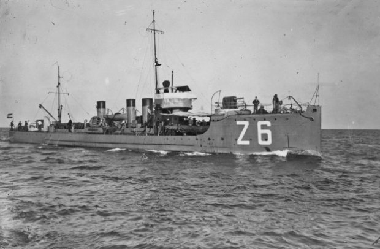
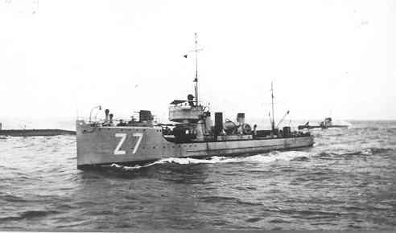
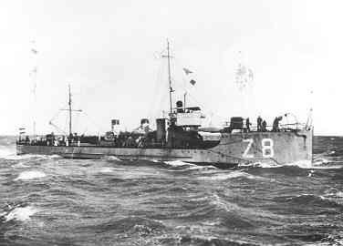

| Naam | Z 1 | Z 2 | Z 3 | Z 4 |
|---|---|---|---|---|
| Foto |  |  |  |  |
| Waterverplaatsing | 277 ton | |||
| Snelheid | 27 knopen | |||
| Bemanning | 48 | |||
| Afmetingen | 61m x 6,3m x 1,9m | |||
| Bewapening | 2x 75mm Bofors No. 4 (2x1) 2x 13mm Browning (2x1) 4x 450mm torpedobuizen (?) |
|||
| Vliegtuigen | - | |||
| In dienst | ? 1919 | ? 1921 | 21 augustus 1920 | ? 1920 |
| Uit dienst | ? 1933 | ? 1933 | Tot zinken gebracht 14 mei 1940 | ? 1933 |
| Naam | Z 5 | Z 6 | Z 7 | Z 8 |
|---|---|---|---|---|
| Foto |  |  |  |  |
| Waterverplaatsing | 263 ton | |||
| Snelheid | 22 knopen | 27 knopen | ||
| Bemanning | 34 | 48 | ||
| Afmetingen | 59m x 6,1m x 1,7m | |||
| Bewapening | 2x 75mm Bofors No. 4 (2x1) 2x 13mm Browning (2x1) |
2x 75mm Bofors No. 4 (2x1) 2x 13mm Browning (2x1) 4x 450mm torpedobuizen (?) |
||
| Vliegtuigen | - | |||
| In dienst | 8 februari 1917 | 8 februari 1917 | 8 september 1916 | 22 september 1916 |
| Uit dienst | 9 april 1945 | 27 november 1941 | 16 juli 1942 | 16 juli 1942 |